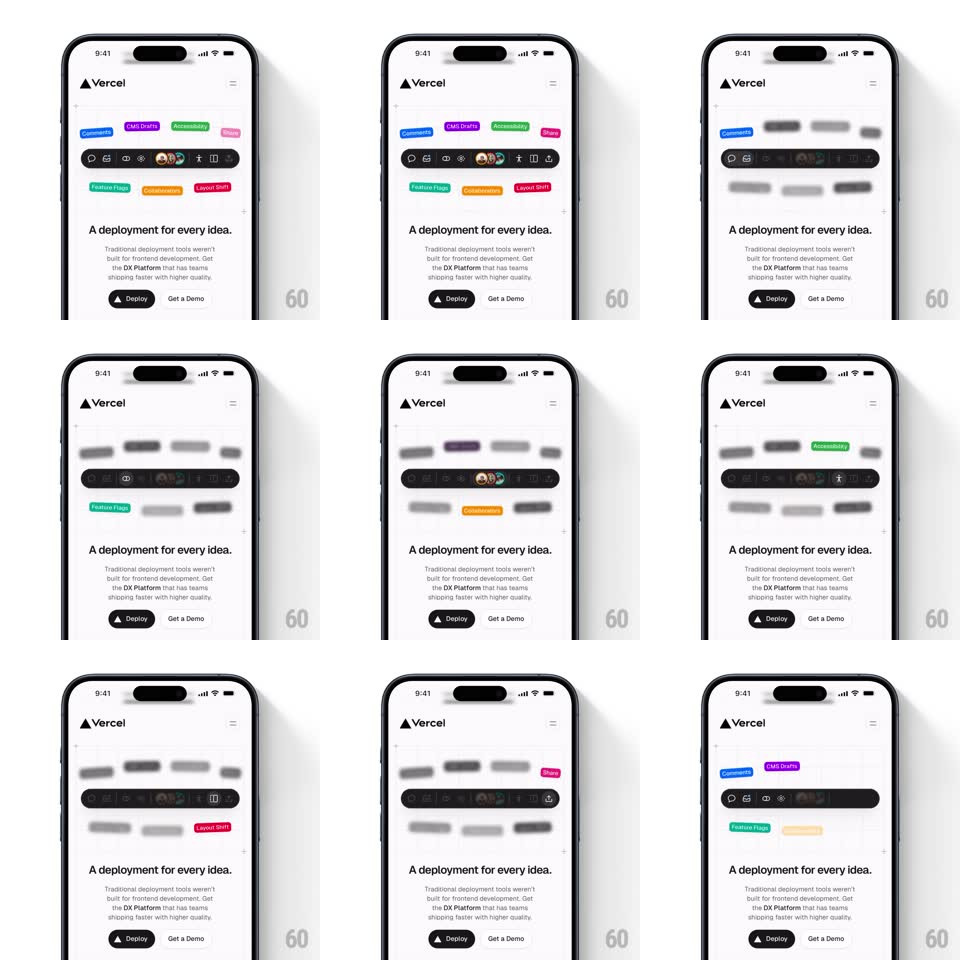

Media
Frame-by-frame

Rebuild this interaction 1:1: Vercel's preview-feature showcase - a cluster of colorful feature badges surrounds a dark toolbar pill, and an automated loop brings one badge into sharp focus at a time while the rest blur away.

Rebuild this interaction 1:1: Vercel's preview-feature showcase - a cluster of colorful feature badges surrounds a dark toolbar pill, and an automated loop brings one badge into sharp focus at a time while the rest blur away. ## Integration Integration: stack-agnostic spec - springs given as stiffness/damping, timed motions as duration + curve; map every value to your framework and animation library of choice. ## Scene The Vercel mobile landing: logo and hamburger up top, a dark floating toolbar pill (comment, avatar stack, flag icons) at center, surrounded by scattered colored badges - Comments (blue), CMS Drafts (purple), Skew protection (green), Flags (pink), Feature Flags (teal), Draft Mode (orange), Layout Shift (red). Below: the "A deployment for every idea." headline with Deploy / Get a Demo buttons. ## Motion spec Pattern: selective-blur spotlight loop. - Idle: all badges render sharp and colored, drifting on slow independent float paths (translate +-4px, 4-6s periods, each offset). - Every ~2s the loop selects the next badge: it springs toward the toolbar (translate + scale to 1.12, spring ~380/22) staying fully sharp while every OTHER badge blurs (gaussian 0 to 6px, 350ms) and dims to gray (saturation tween, 350ms). - The toolbar's matching icon lights in sync (the comment icon when Comments focuses, opacity + background fill, 200ms). - After a 1.2s hold the badge springs home, blur releases, and the next badge takes focus - a continuous attention carousel. - Badge entry on load: they scatter in from the toolbar point (scale 0 + translate, spring ~360/20, 50ms stagger), then the loop begins. ## Calibration - Blur must be real backdrop-quality gaussian on the badge layer only - the headline and toolbar stay sharp throughout. - The focus order follows visual position (top-left to bottom-right) so the eye sweeps predictably. ## Reduced motion Focus swaps by opacity only (others fade to 30%); no blur, no drift. ## Don't miss - The badges are the only color on the page - blur must not muddy them into gray mush permanently; color returns crisply. - The toolbar pill is the anchor: badges spring toward IT, never to center-screen.